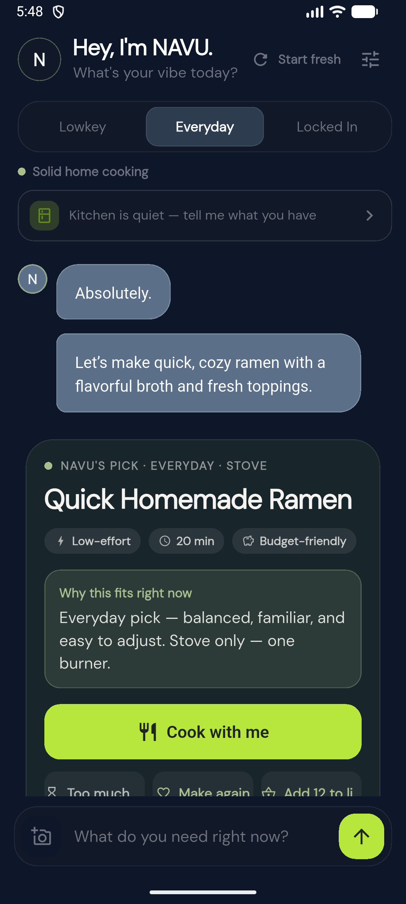

01
Pick one meal
Ask for exactly what sounds good.
Name a dish, a food tradition, an ingredient, or the time you have. NAVU keeps the request clear and turns it into one complete meal.

AI companion · Meals · Groceries · Cooking
NAVU is an AI companion assistant focused on helping you decide what to eat, use the ingredients you have, build a practical shopping list, and cook one clear step at a time.
Android is ready for release testing. iPhone support is planned for a future release.

A real meal flow
Ask for a dish or start with ingredients you already have. NAVU turns that into one meal, a practical shopping list, and cooking guidance you can follow at your pace.
Real meals. Practical next steps.
NAVU carries the named dish and your follow-up details into one complete meal instead of replacing the idea with something unrelated.
Pick one meal
Name a dish, a food tradition, an ingredient, or the time you have. NAVU keeps the request clear and turns it into one complete meal.

Cook at your pace
Keep the recipe beside you as you cook. See the current step, heat guidance, and safety notes, with a timer when the recipe calls for one.

Keep the good ones
Keep the exact recipe, add what you need to your list, and reopen the meal later without generating a different replacement.

Good meals are worth keeping
A shopping list should not outlast the recipe it came from. Save a meal, pick up what you need, and come back to the same ingredients and instructions.
My meals brings saved recipes, favorites, and recent meals together. Find one by its name or an ingredient.
Add ingredients to your list and NAVU saves the meal with them. Your list gives you a way back to the recipe.
Open the recipe you saved, not a newly generated replacement. Starting a fresh session leaves your saved meals and shopping list in place.
Shown in the latest development build. Meals are saved on this device, not synced between devices. Clearing app or browser storage removes them.
Your kitchen, your equipment
Tell NAVU whether you use gas, electric coil or radiant, or induction. Cooking guidance takes that into account, from how quickly the heat changes to the cookware you need.
Not sure? That is an option too. Follow the recipe's cooking cues and your appliance instructions, not a guessed dial setting.
A world of home cooking
There is no fixed menu to scroll through. Ask for a dish, a food tradition, or the kind of flavor you want. NAVU turns that into one complete meal that fits the moment.
Breakfast, lunch, dinner, and snacks that respect the food you asked for.
From a traditional gumbo to a quick weeknight plate.
Ask for a specific country, dish, ingredient, or style.
From ramen and Filipino comfort food to curries and rice dishes.
Familiar staples or something new, matched to your time and effort.
Specific food traditions matter more than a generic label.
“Traditional gumbo.”
“A Puerto Rican breakfast.”
“Something Korean and low-effort.”
Built to connect the details
NAVU connects what you want to eat, what is already in your kitchen, what you need to buy, and the recipe you plan to cook.
NAVU keeps the dish, ingredients, food tradition, and kitchen equipment connected from the first request to the final step.
Choose Lowkey, Everyday, or Locked In so the meal fits the time, effort, and technique you want to use.
Save a meal you want to make, favorite one you loved, and come back to the same recipe when you are ready.
Move from a meal to a Have versus Need list, then return to the exact recipe and cook it in the kitchen you actually have.
Your cooking mode changes the time, effort, and technique NAVU recommends.
Gentle
Easy wins only. Still something satisfying when your energy is low.
Home
Solid home cooking. Balanced, familiar, easy to adjust.
Worth it
More technique and deeper flavor when you want to put in the work.
Your grocery list stays connected to the meals you are making. Keep what you have under Have and what you need under Need. A new suggestion will not replace the shopping list you already started.
Product boundary
NAVU provides practical assistance with food, grocery planning, and cooking. It is not a therapist, counselor, doctor, medical service, or crisis service, and it does not diagnose or treat any condition.
If someone may be in crisis, NAVU pauses food suggestions and points them toward real-world support. In the United States and its territories, call or text 988 for free, confidential help. If there is immediate danger, call 911.
Learn what to expect from 988The promise
No subscriptions, paid features, or ads in your meal planning. Helpful technology should work for people, not use their needs against them. Your food preferences are yours to choose, and NAVU never makes assumptions about who you are.
NAVU can support itself through clearly labeled business activity outside your private app activity. Revenue will never unlock features, change its recommendations, or turn what you share into ad space.
Help shape NAVU
Try the everyday food moments that matter: breakfast before a busy day, using what is already in the kitchen, or reopening a saved meal you want to cook again. Early feedback will help us prepare NAVU for a wider release.
Testing access is arranged separately. NAVU is not yet a public store download. Verified download links will appear here when available.
{kind=link}